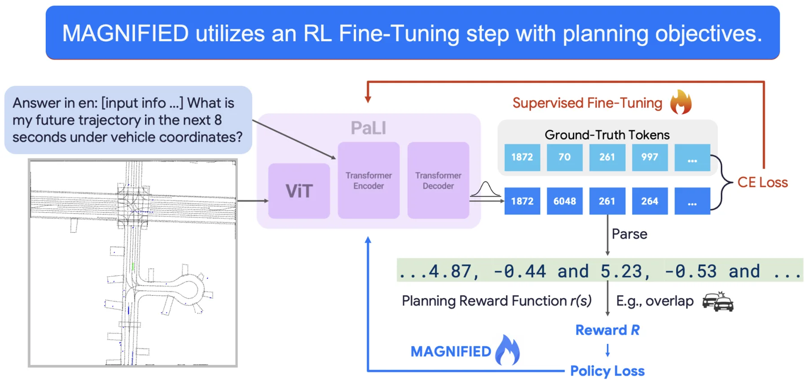
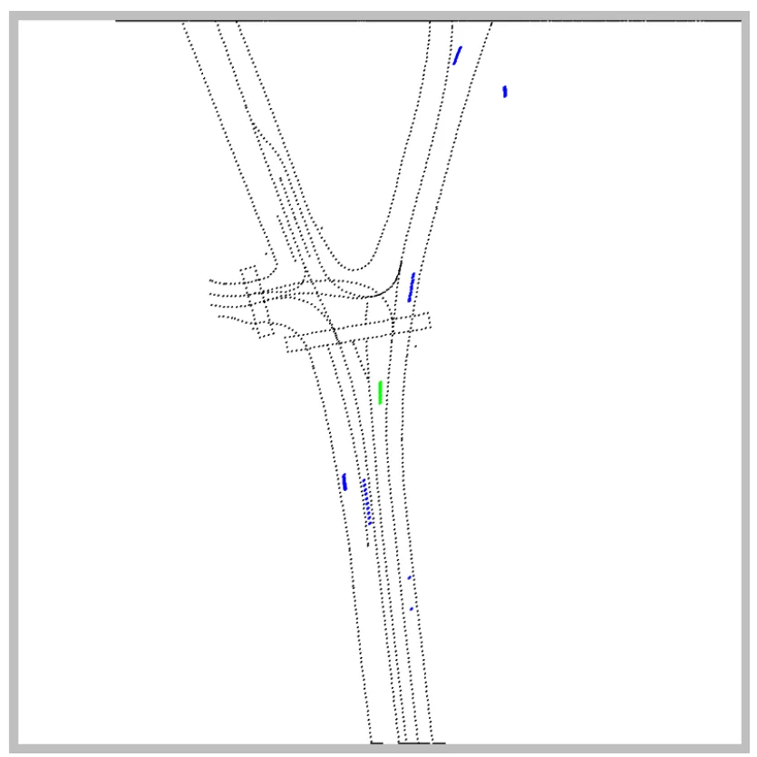
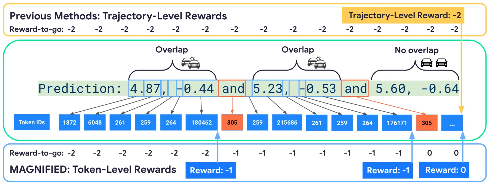
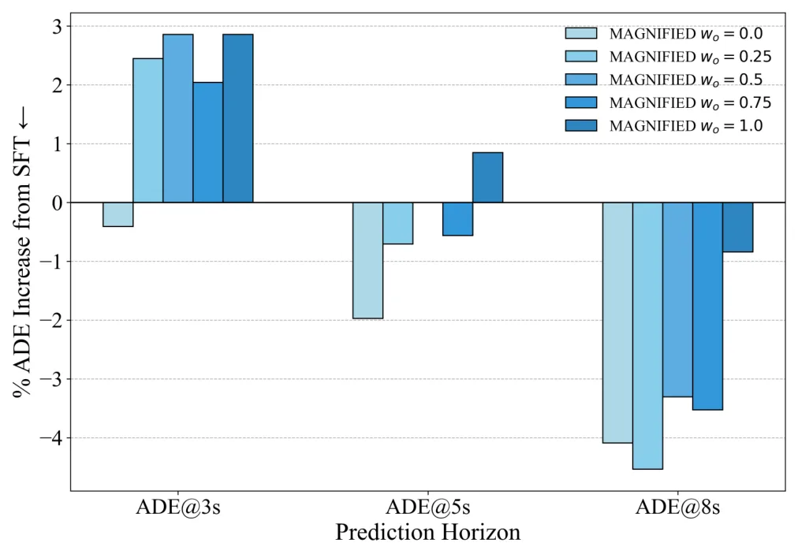
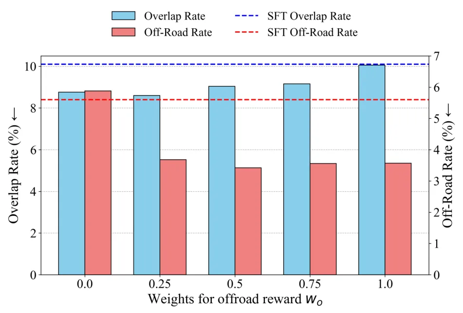
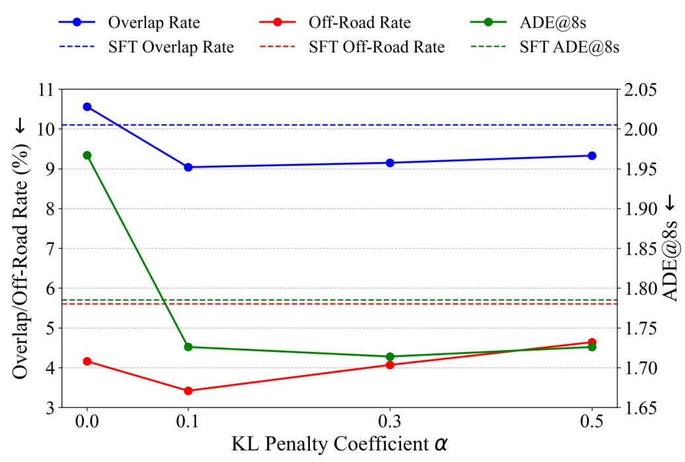
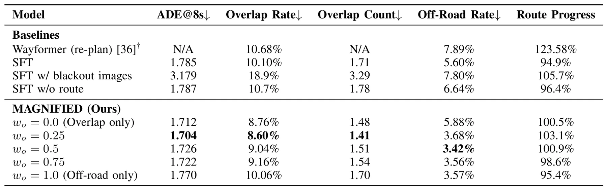
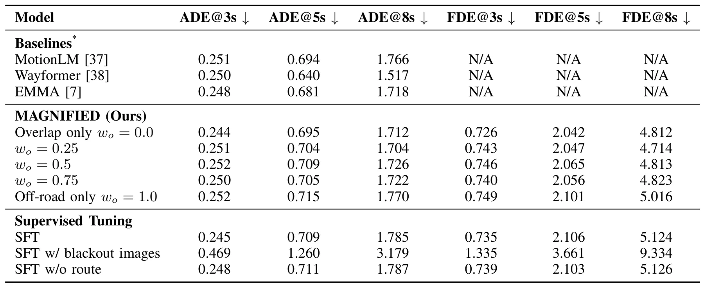
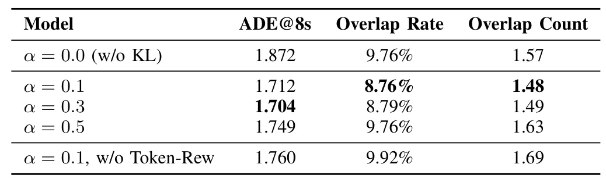
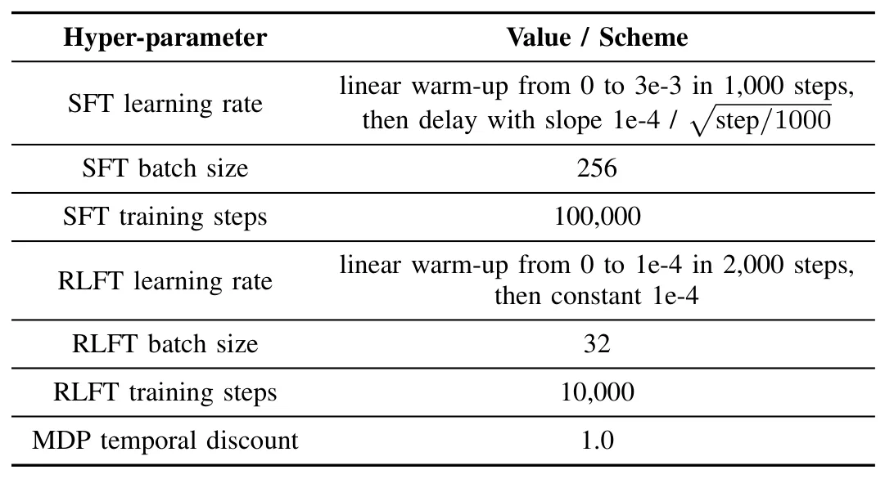

MAGNIFIED：面向自动驾驶运动规划的多模态大模型强化学习微调MAGNIFIED: RL Fine-tuning of Multimodal Large Language Models for Motion Planning
偏运动规划而非 SLAM，但对具身/自动驾驶系统中的感知-规划闭环有启发；建议关注其 reward 设计和真实部署泛化。
一句话工作总结
把 MLLM 的文本轨迹输出接到规划奖励上做 RLFT，减少自动驾驶规划中的碰撞重叠和 off-road 行为。
摘要
传统多模态大模型训练多依赖 next-token 预测和监督微调，容易只模仿文本坐标序列而忽视多步规划后果与安全/舒适目标。MAGNIFIED 将预测 token 映射为车辆轨迹，并用 token-level planning rewards 做强化学习微调，使模型直接优化自动驾驶规划指标。作者在 Waymo Open Motion Dataset 上使用栅格化鸟瞰图和 tokenized trajectories，先做 SFT，再做 RLFT；相较 SFT 基线，重叠率下降 10.5% 以上，越界率下降 38.9%。
Multi-modal Large Language Models (MLLMs) have demonstrated remarkable capabilities in semantic understanding and common sense reasoning, making them promising candidates for solving planning problems in autonomous driving. However, the next-token text prediction objectives traditionally used in pre-training and supervised fine-tuning (SFT) of MLLMs may fall short of fulfilling the planning objectives for autonomous vehicles. The next-token prediction objective merely encourages per-token imitation in text, often irrespective of multi-step consequences and the alignment with crucial planning considerations such as giving space to other road actors. To overcome these limitations, we propose a reinforcement learning fine-tuning (RLFT) approach, MAGNIFIED, that aligns the MLLM-based driving agent with planning objectives by learning from token-level rewards. By mapping a sequence of predicted tokens to corresponding vehicle trajectories and learning from planning rewards, MAGNIFIED optimizes for the true planning objectives rather than focusing solely on token prediction accuracy, enabling the model to refine its understanding of the planning task beyond simple imitation. We validate our approach on the Waymo Open Motion Dataset with a novel setup incorporating rasterized birds-eye views and tokenized trajectories as inputs and planning-oriented outputs. An initial SFT phase establishes a strong baseline in outputting plan trajectories as sequences of X-Y coordinates in text, while subsequent RL fine-tuning substantially enhances planning performance relative to the SFT baseline (demonstrating over a 10.5% reduction in overlap rate and a 38.9% reduction in off-road rate), underscoring the potential of RLFT on MLLMs to achieve vehicle planning that is better aligned with compliant, comfortable, and efficient driving.
中文解读摘录
- 英文题名：Scene-Level Heterogeneous Physics Simulation with 3D Gaussian Splats
- 作者：Xiaoyang Liu, Shangzhe Wu, Kai Han
- 类别/来源：cs.GR, cs.AI, cs.CV；rss:cs.GR；采集 score=12；阅读优先级=9.2/10。
- 一句话总结：把 3DGS、网格和流体统一抽象为物理粒子，使捕获场景中的高斯资产能够参与真实交互和非刚体变形。
- 为什么值得看：与 3DGS 场景表示、交互式三维资产和机器人仿真高度相关；亮点在于从渲染表示跨到统一物理表示。需后续确认开源计划、运行成本和复杂真实场景鲁棒性。
- 标签：3DGS、物理仿真、场景级交互、非刚体变形
- 链接：abs / PDF
图表/页面预览
{kind=link}

{kind=link}

{kind=link}

{kind=link}

{kind=link}

{kind=link}

{kind=link}

{kind=link}

{kind=link}

{kind=link}
